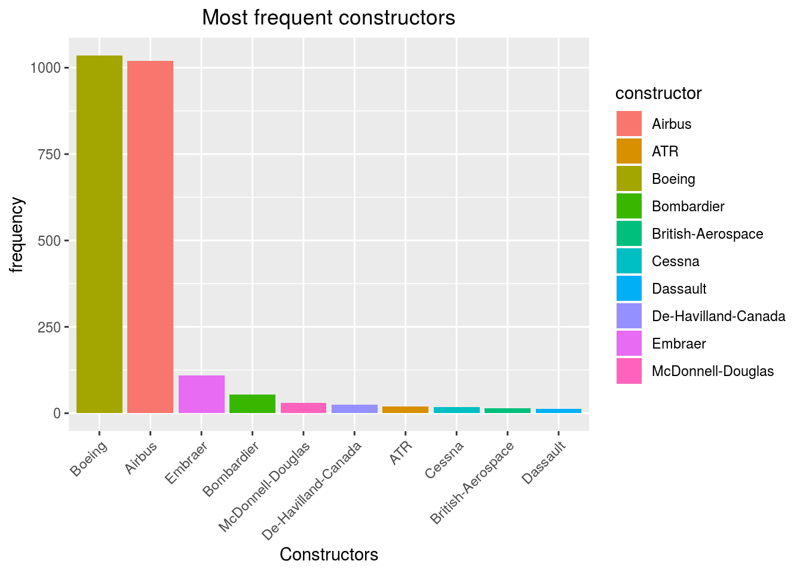
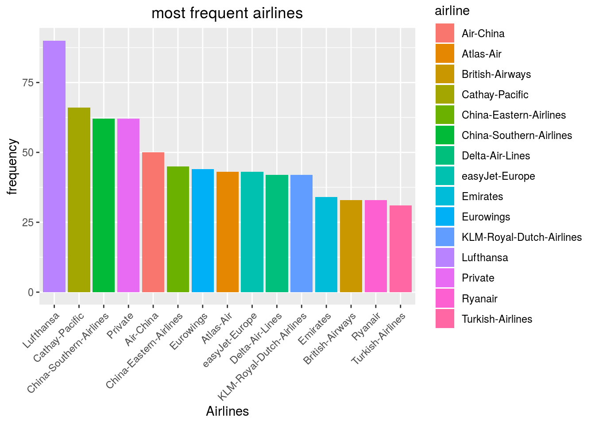
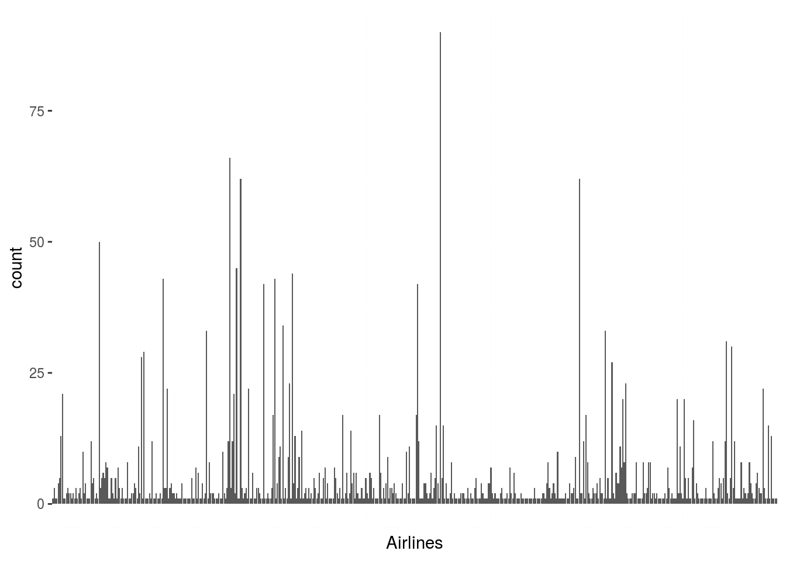
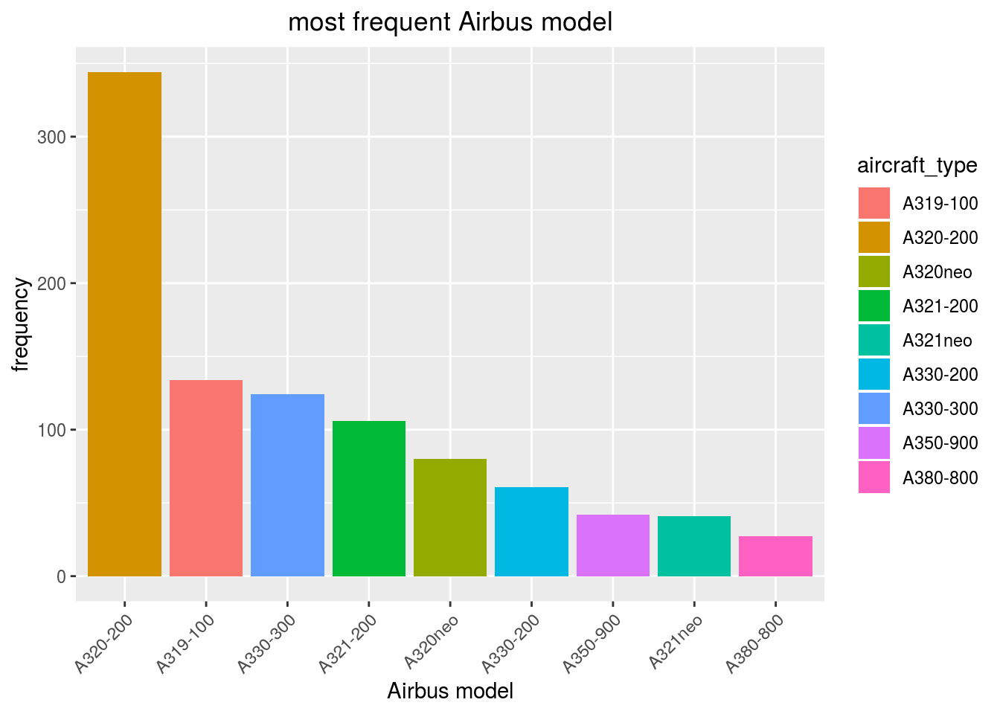
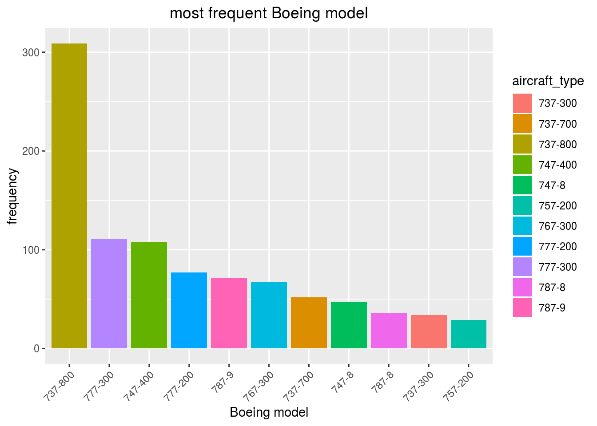

Part 3 Exploratory Data Analysis
3.1 Load the data
The count of NA is :
## [1] 87Without NA, our data has the following size:
## [1] 2553 4Unfortunately as you can see there is a lots of NAs in the scrapped data.
3.2 Top constructor

Here we directly anderstand that we won’t be able to train a CNN for other constructor than Airbus and Boeing.
3.3 Top airlines

Here, unlike for the constructors the distribution of airlines is more homogeneous, to verify this claim we can plot all of the airlines. So we may be able to train a cnn to recognize the airline of a plane, at least for the most frequent one.

Here we observe there is also a disparity in airlines frequency but much less present than for the constructors.
3.4 Proportion of model for Airbus

There exist 20 different models of Airbus in our data. The most frequent Airbus is by far the A320-200.
3.5 Proportion of model for Boeing

There exist 30 different models of Boeing in our data. The most frequent Airbus is by far the A320-200.